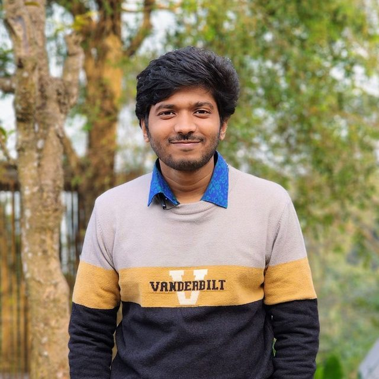

Senior Software Engineer, KubeDB Team Lead
Saurov Chandra Biswas
PostgreSQL on Kubernetes — high availability, cross-datacenter disaster recovery, and migrations off self-managed VMs that keep every row.
I lead the KubeDB team at Appscode Inc., where I own PostgreSQL on Kubernetes — Raft-based high availability, cross-datacenter disaster recovery, and the Day-2 automation that keeps thousands of clusters running without anyone watching them.

What I work on
Six things, and the numbers behind them
I build and run PostgreSQL on Kubernetes: the operators that manage it, the replication that keeps it alive across datacenters, and the migrations that get it there from self-managed VMs without losing data.
PostgreSQL on Kubernetes
Provisioning, configuration tuning, scaling, major-version upgrades, TLS and credential rotation, WAL archiving and point-in-time recovery — the whole lifecycle as declarative API calls instead of runbooks.
PostgreSQL 13 → 18 · 8 Day-2 operations
VM-to-Kubernetes database migration
Moving production PostgreSQL off self-managed VMs onto self-managed Kubernetes by physical replication, so cutover is the promotion of an already-streaming replica rather than a restore — and proving afterwards that the data arrived intact.
333 GB · 17 databases · 4,003 tables verified identical
High availability and cross-datacenter DR
Raft leader election with write-ahead-log positions propagated over gRPC, synchronous quorum replication spanning two datacenters, and an automated promotion path so a surviving site takes over without waiting for someone to notice.
Failover in 1–5 seconds · RPO 0 measured
Kubernetes operator engineering
Go controllers, custom resources and admission webhooks that teach Kubernetes to run stateful workloads it was never designed for, including a StatefulSet fork that places pods across geo-distributed, multi-cloud clusters.
733 PRs across 100+ repositories
Operating it at scale
Consistent-hash sharding so one control plane reconciles the whole fleet in parallel, verified with bulk-provisioning benchmarks and deliberate fault injection rather than assumed to work.
2000+ clusters · 16+ chaos experiments
Regulated and production-critical platforms
Banking and payments workloads where the database configuration has to map to a regulator's security guideline clause by clause, audit trails have to survive scrutiny, and recovery has to be drilled and reported to auditor standard.
Central-bank-regulated payments platform
Depth
The Kubernetes surface I actually work on
"Kubernetes" on a CV covers everything from applying a manifest to writing the controllers that make new kinds of workload possible. I work at the second end — I build the controller, and it does the job a person would otherwise do by hand.
When the primary stops answering
A coordinator runs beside every PostgreSQL pod and holds Raft consensus with the others. That is what makes the cluster able to repair itself rather than wait to be repaired.
Experience
Three years, two promotions, one team to lead
Apr 2023 — present
Senior Software Engineer, KubeDB Team Lead
Appscode Inc. · Dhaka, Bangladesh
- Apr 2023Joined as Software Engineer
- Apr 2025Promoted to Senior Software Engineer (2 yr)
- Feb 2026 -De-facto lead of the KubeDB team, 12 engineers
- Promoted twice in three years; leads a 12-engineer team and owns the release lifecycle - 9 KubeDB releases shipped.
- Built PostgreSQL HA on Raft leader election with continuous LSN propagation over gRPC, cutting failover to 1-5 seconds.
- Automated cross-datacenter database failover - outage detection and promotion now run unattended, replacing a recovery path that waited on someone noticing the outage before failing over by hand, often out of hours.
- Built Read Replica: standbys stay attached at minimal CPU and memory, so a campaign peak is absorbed by scaling them with one OpsRequest in minutes instead of re-syncing a multi-terabyte dataset over hours or days.
- Automated Day-2 ops - autoscaling, self-healing, upgrades, TLS/credential rotation, and PITR - replacing work that was previously manual and per-cluster.
- Delivered the Oracle Kubernetes operator with a Data Guard coordinator for standby provisioning, replication, and switchover.
- Led the database-vendor side of a production migration for a central-bank-regulated payments platform - 333 GB, 17 databases - onto a synchronous multi-datacenter Kubernetes cluster.
- Found and fixed two product defects under that engagement: a shell-injection path in Pgpool user sync, and a broken point-in-time restore for tuned databases.
- Built an internal AI prompt library (117 prompts), closing long-outstanding feature parity across 25+ database engines.
- Proved resilience with Chaos Mesh - 16+ fault-injection experiments against HA Postgres clusters.
- Sharded operator workloads with consistent hashing to run 2000+ Postgres clusters on one control plane.
Apr — Sep 2025
Independent engineering
Remote · part-time · client confidential
- Built a Go microservice automating multi-tenant application deployments on GKE, replacing a manual per-tenant process.
- Go + Gin service exposing REST APIs and Server-Sent Events for real-time deployment progress, driving Helm releases on GKE.
- Tenant isolation per namespace with resource quotas and network policies for fair, secure resource sharing.
- Multi-tenant observability with Prometheus and Grafana: per-tenant metric isolation enforced via kube-rbac-proxy and RBAC, with a query frontier that authorizes and namespace-scopes every query.
- Istio service mesh for Ingress/Egress control, TLS termination, load balancing, and inter-service routing.
- GitOps delivery pipeline on Helm + ArgoCD; Terraform modules provisioning GKE, IAM, VPC, and GCS.
Leading
How I run the team
Leading twelve engineers is mostly three jobs: deciding what good looks like, making that decision reproducible when I am not in the room, and being the person who is calm at 3 a.m.
Review is where standards actually live
542 reviews for 37 different engineers. I read for the failure path first — what happens when this call times out, when the pod is killed mid-write, when the field is nil. Style is a linter's job and I don't spend review cycles on it.
542 reviews · 37 engineers · peak 94 in one month
Context beats onboarding calls
New engineers lose weeks to knowledge that only exists in someone's head. I write it down instead: per-repository architecture context files, and a tiered troubleshooting curriculum that walks from events-first triage through timeline correlation to root-cause discipline.
~15 onboarding and troubleshooting documents
I own the release, including the announcement
Features, stability, production rollout, and the public post — one person accountable end to end. Writing the announcement myself is the forcing function: if I can't explain what shipped, it wasn't ready to ship.
9 releases · 9 announcements authored
Prove resilience, don't assert it
I ran fault injection against our own HA Postgres and published what broke, then reviewed the engineers who repeated it for MySQL, MariaDB and Redis. The point wasn't my experiment; it was making 'break it on purpose' a normal thing for the team to do.
16+ chaos experiments · seeded a team-wide series
On-call is a leadership job, not a rota entry
Enterprise escalations across six countries land on me. The first move is always narrowing blast radius and establishing a timeline — a root cause that arrives after the customer has given up is worth very little.
Escalations across 6 countries
Case studies
Eight problems, and what it actually took
Each of these is real work with a measured outcome — the situation, why the obvious fix doesn't hold, the design, and how it was proven. Where something was a team effort, it says so.
Moving a bank's ledger, and proving it arrived intact
333 GB of regulated payments data moved onto Kubernetes overnight. The move was the easy part. The job was proving, before the country opened for business, that every cent had arrived.
Read the case study →The gate that signed off 4,003 tables
Before a regulated migration can complete, someone has to prove the copy matches the original. Building a check trustworthy enough to carry that signature took two rounds of catching the check itself being wrong.
Read the case study →One control plane, 2000+ Postgres clusters
A single operator replica reconciling every database in the fleet is a bottleneck with a bad failure mode.
Read the case study →And five more
- PostgreSQL Zero data loss across datacenters - proved by destroying the primaryThe test wasn't a failover drill. We deleted the primary with its PVCs and checked whether the other continent still had every byte. →
- PostgreSQL The cost of always being ready for peakTheir only way to survive a campaign was to pay for campaign capacity every day of the year. →
- Reliability Breaking PostgreSQL on purpose, 16 different waysHigh availability is a claim until something kills your primary at 3 a.m. So we killed it ourselves, repeatedly. →
- AI-assisted Engineering Closing feature parity across 25+ database engines with an agent loopSome gaps stay open for years not because they are hard, but because they are 22 near-identical changes. →
- Security Hardening the CI supply chain after an incidentA CI workflow deleted GitHub organizations. The response was a team one, run with our CEO and senior engineers - this was my part of it. →
Selected work
Systems I own or built
KubeDB PostgreSQL
Production-grade Kubernetes operator for PostgreSQL: Raft-based HA and failover, streaming and synchronous replication, WAL archiving with PITR, and the full Day-2 operations surface.
ProductKubeDB PetSet
A fork of the native StatefulSet controller that orchestrates pods across geo-distributed, multi-cloud Kubernetes clusters.
RepoPostgres DC-DR Control Plane
An OCM addon-framework control plane that detects the loss of an entire datacenter and hands the primary role to a surviving site without a human in the loop.
Operator Shard Manager
A consistent-hashing controller that distributes owned resources across operator replicas, so one control plane can reconcile thousands of database clusters in parallel.
RepoPostgreSQL Read Replica
Decoupled replica count from replica size so an e-commerce customer with a multi-terabyte Postgres dataset could absorb campaign peaks in minutes instead of paying for peak capacity all year.
Oracle on Kubernetes
Brought Oracle into KubeDB: API and CRDs, operator, provisioner, webhooks, installer wiring, plus an oracle-coordinator implementing Data Guard.
KubeDB Prompt Library & AI-assisted feature parity
Built an internal prompt library and a repeatable develop-test-fix-deploy loop, then used it to close long-outstanding feature gaps across the whole database fleet.
Path-Pulse IoT Backend
Backend for a fitness/IoT tracker: wearable and GPS devices stream location and pulse data; the service computes distance and pulse alerts and manages users, groups, and events.
Repogo-pgtune
A Go port of pgtune - library plus HTTP API for generating PostgreSQL tuning configurations, output-compatible with pgtune.leopard.in.ua, with zero external dependencies in the core and built for use inside cloud-native controllers.
RepoMulti-tenant GKE platform work
Automated multi-tenant deployment and observability on GKE: a Go control-plane service, per-namespace tenant isolation, a GitOps delivery pipeline, and per-tenant metric isolation.
Monitoring setupProduction platform for a regulated payments provider
Migrated a 333 GB payments database off VM-hosted PostgreSQL onto a Kubernetes-managed synchronous three-node cluster across two datacenters, under central-bank regulation — then operated it through the first weeks of production.
pgsanity
A migration verification tool: proves a migrated PostgreSQL target matches its source by schema, row counts and content fingerprints — built after the shell version it replaced taught me the ways such a tool can quietly lie.
Smaller personal builds: bit-torrent-client · concurrent-file-server · high-write-load-client · web-scraper-colly.
Writing & talks
Published under my own name
Four engineering deep-dives, two conference-style webinars, and the PostgreSQL documentation for KubeDB — roughly 2,300 lines of it across the disaster-recovery and migration guides alone, every procedure validated live on real clusters before it was written down.
- 2026-04-16 Chaos Testing KubeDB PostgreSQL: Building Resilience with Chaos Mesh →
- 2025-06-22 Automating PostgreSQL Operations In Kubernetes Using KubeDB →
- 2025-03 Operator Shard Manager →
- 2024-01 PostgreSQL WAL archiving on NFS →
Talks
- 2025-05-21 Effortlessly provision KubeDB-managed databases at scale using KubeDB Operator Shard ManagerWebinar · AppsCode Inc. →
- 2025-07-02 Provision and Manage Oracle Database on Kubernetes using KubeDBWebinar · AppsCode Inc. →
Documentation authored for kubedb.com
- Postgres automated failover & disaster recovery
- Distributed Postgres across multiple clusters
- Remote replica for datacenter failover and failback (+1,045 lines, Singapore <-> London validated)
- Zero-data-loss cross-cluster synchronous replication (+810 lines)
- Migration of self-managed Postgres into KubeDB (+490 lines)
- Auto configuration tuning (pgtune)
- PostgreSQL extensions guide + modernized streaming-replication docs
- Postgres archiver concepts
- Arbiter, restart, reconfigure, reconfigure-TLS, autoscaler guides
- Supported-features tables for all KubeDB databases
Release lifecycle
Nine releases, shipped end to end
Owns the KubeDB release lifecycle end to end - features, stability, production rollout, and the public announcement. Nine releases shipped, each with an announcement blog authored personally.
| Release | Date | Wrote the announcement |
|---|---|---|
| v2026.7.10 | 2026-07-10 | Announcement |
| v2026.6.19 | 2026-06-19 | Announcement |
| v2026.4.27 | 2026-04-27 | Announcement |
| v2026.2.26 | 2026-02-26 | Announcement |
| v2026.1.19 | 2026-01-19 | Announcement |
| v2025.5.30 | 2025-05-30 | Announcement |
| v2025.3.24 | 2025-03-24 | Announcement |
| v2025.02.19 | 2025-02-19 | Announcement |
| v2024.8.21 | 2024-08-21 | Announcement |
- appscodelabs/release-automaton (8 PRs) - added documentdb-coordinator, Aerospike, neo4j-backup-plugin, qdrant-restic-plugin, hanadb-coordinator, migrator CLI tags, and physical-backup image tags to the release process.
- kubedb/installer (63 PRs) - catalog and version publishing, webhook configuration wiring, RBAC, feature gates, fresh-install and catalog-refresh fixes.
Toolkit
What I reach for
Languages
Go (Gin, gRPC, client-go) · C++ · Bash · Python (basic) · SQL
Kubernetes
Custom Controllers / Operators · CRDs · client-go · kubebuilder · Helm · Open Cluster Management · Kubeslice · Istio · OpenShift · Rancher / Harvester · k3s · TopoLVM · Longhorn
Databases
PostgreSQL · Oracle Data Guard · pgpool · WAL archiving / PITR · wal-g · InfluxDB · MySQL / MariaDB / MongoDB (operator-level)
Distributed systems
Raft consensus · Leader election · Consistent hashing · Sharding · Multi-cluster orchestration · Synchronous replication · Split-brain avoidance
Cloud & DevOps
AWS · GCP / GKE · Azure · Linode · Terraform · ArgoCD · GitOps · GitHub Actions · Docker · CI/CD · Supply-chain hardening
Observability
Prometheus · Grafana · OpenTelemetry · kube-rbac-proxy · Chaos Mesh
Protocols & security
gRPC · REST · TLS / mTLS · cert-manager · Vault / KubeVault · RBAC
Practices
System design · Code review at volume · Release management · Technical writing · AI-assisted development · On-call / incident response · Mentoring
Platform & delivery
Istio service mesh · Multi-tenant namespace isolation · Resource quotas & network policies · kube-rbac-proxy · ArgoCD · GitOps · Helm · Terraform · Go + Gin REST/SSE services
Migration, backup & DR
VM-to-Kubernetes database migration · pg_basebackup · Streaming replication · Logical vs physical migration · Cutover planning & rollback · Data-integrity verification · DC/DR architecture · Cross-datacenter failover · Point-in-time recovery (PITR) · WAL archiving · Restic / object-storage backup · RPO / RTO drills
Self-managed infrastructure
Self-managed Kubernetes (k3s) · Bare-VM cluster bootstrap · TopoLVM node-local storage · LVM thin provisioning · keepalived / VRRP virtual IPs · Pgpool-II connection pooling · MetalLB · cert-manager · On-prem & private cloud
Education
Where it started
Full academic record
| Level | Institution | Result | Distinction |
|---|---|---|---|
| HSC (Higher Secondary Certificate) | Amrita Lal Dey College | GPA 5.00 / 5.00 | — |
| SSC (Secondary School Certificate) | Bakergonj J.S.U Model High School | GPA 5.00 / 5.00 | — |
| JSC (Junior School Certificate) | Bakergonj J.S.U Model High School | GPA 4.50 / 5.00 | General Scholarship |
| PSC (Primary School Certificate) | Bakergonj Model Government Primary School | — | Talent Pool Scholarship |
Before infrastructure
Five years of competitive programming
Where the instinct for algorithms and for debugging under time pressure came from. 2,950 problems solved across 500 contests.
Divisional Champion (Barishal Division) five times across 2021-2022 - ICPC Dhaka Regional 2021 and 2022, and the BUET, RUET and AUST inter-university contests in 2022.
- ICPC Dhaka Regional 2021 - 11th of 165
- ICPC Dhaka Regional 2022 - 13th of 162
- BUET CSE Fest IUPC 2022 - 15th of 110
- RUET CSE Fest IUPC 2022 - rank to confirm
- AUST CodeFiesta IUPC 2022 - 41st of 105
Contact
Let's talk
I'm interested in hard problems in distributed systems, databases, and the platforms that run them. Email is the fastest way to reach me.